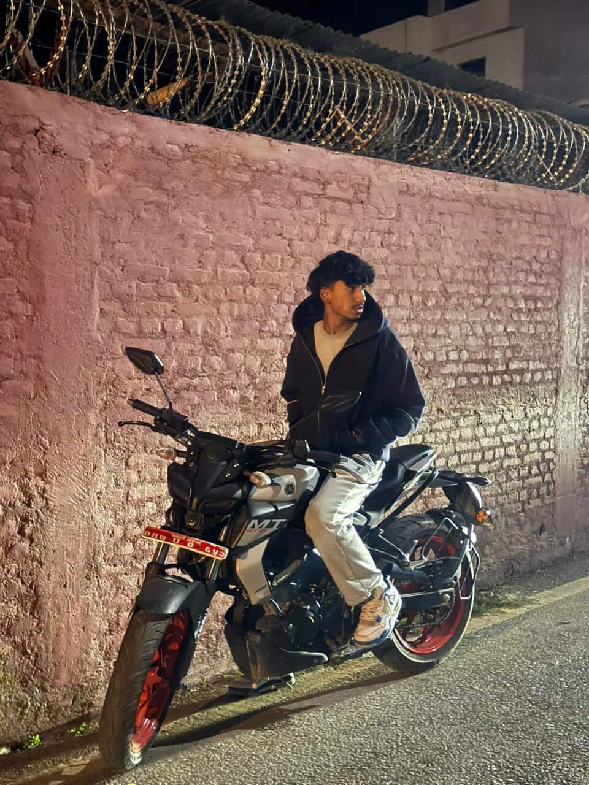
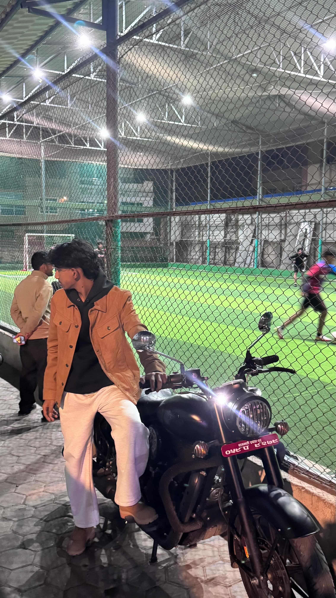

A Student of Technology, Craft, and the Art of Building Things on the Web
I am a Grade 11 student at Kavya School, Kathmandu, studying Computer Science. My principal interest lies in web development — the craft of building websites from scratch using nothing but HTML and CSS.

This portfolio represents the culmination of a year's worth of learning, practice, and dedication. Every page was coded by hand, without templates or frameworks, as required by the CS427 coursework guidelines.
I believe that the ability to build things on the web is one of the most valuable skills a young person can develop today — combining logical thinking, visual design, and communication in one discipline.
"Be yourself; everyone else is already taken."
― Oscar WildeThe website you are reading was built entirely by hand as the final project for CS427 at Kavya School. It required a minimum of four web pages demonstrating inline, internal, and external CSS techniques.
The project also demanded thorough written documentation — including wireframe design, testing records, and a deployment report. Every section of this portfolio was considered carefully in terms of both content and visual presentation.
Education
I am currently studying in Kavya school with the management NEB +2 Course.
What I Love
I love everything to do with bikes like riding them around , I spend my time hangingout with friends.
Future Plans
I plan to start my own buisness.